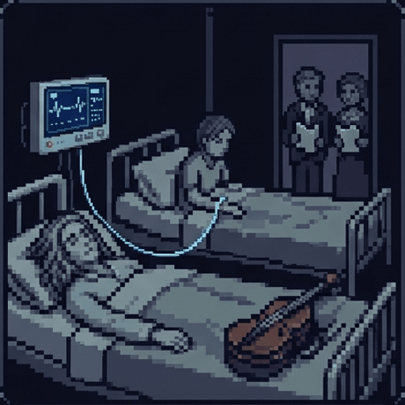
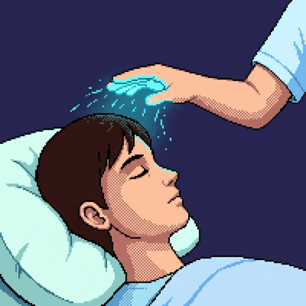
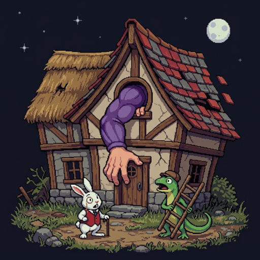
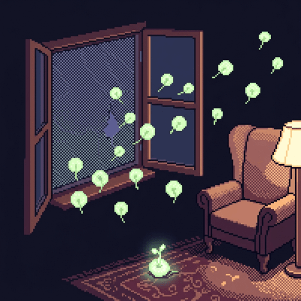
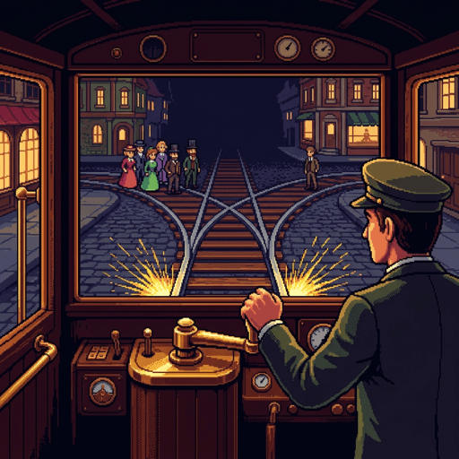
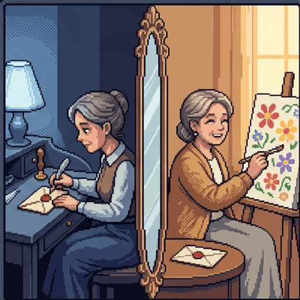

"Why, sometimes I've believed as many as six impossible things before breakfast," says the White Queen in Through the Looking-Glass.
Judith Jarvis Thomson (1929–2020), a philosopher at MIT, made moral arguments out of impossible stories. You are about to meet six of them.
Use → (or Next) to advance and reveal points. F = fullscreen.
Where You Stand Now
Rate each statement. There are no right answers, and you'll rate them again at the end.
Made-up cases, however strange, can teach us something true about real moral decisions.If someone has a right to life, others must give them whatever they need to stay alive.If you knowingly took a risk, you're responsible for what follows, even if you took precautions.A bystander may turn a runaway trolley so it kills one person instead of five.A written advance directive should bind a later version of you who no longer remembers writing it.
What Is a Thought Experiment?
A thought experiment is an imagined situation used to test a claim. You don't run it. You work out what would happen in it, or what would be right.
Aristotle taught that heavier objects fall faster. Galileo asked you to imagine tying a heavy stone to a light one.
The light stone should slow the heavy one down, so the pair falls slower. But the pair weighs more, so it should fall faster.
The theory predicts both at once, so it must be false. Galileo refuted it without dropping anything.
The Argument Thomson Answered
In 1971, two years before Roe v. Wade, Thomson published "A Defense of Abortion." It opens with a common argument against abortion:
Every person has a right to life.
The fetus is a person from the moment of conception.
A woman has a right to decide what happens in and to her body.
A person's right to life is stronger than that right. So abortion is wrong.
Most debate is over premise 2. Thomson thought it false: a fertilized egg is no more a person than an acorn is an oak tree.
She grants premise 2 anyway, for the sake of argument, and attacks premise 4 with a story.

The Violinist
"You wake up in the morning and find yourself back to back in bed with an unconscious violinist. A famous unconscious violinist."
— Thomson, "A Defense of Abortion" (1971)
He has a fatal kidney disease. The Society of Music Lovers searched the medical records and found that only you have the right blood type.
Last night they kidnapped you. They plugged his circulatory system into yours, so your kidneys now clean his blood as well as your own.
The Hospital Director Explains
"Look, we're sorry the Society of Music Lovers did this to you—we would never have permitted it if we had known. But still, they did it, and the violinist now is plugged into you. To unplug you would be to kill him. But never mind, it's only for nine months. By then he will have recovered from his ailment, and can safely be unplugged from you."
— Thomson, "A Defense of Abortion"
Thomson asks: are you morally required to stay? It would be very kind of you. But do you have to?
What If It Were Nine Years?
Suppose the director says it's nine years, or the rest of your life. You protest. He replies:
"Tough luck. … All persons have a right to life, and violinists are persons. Granted you have a right to decide what happens in and to your body, but a person's right to life outweighs your right to decide what happens in and to your body. So you cannot ever be unplugged from him."
— Thomson, "A Defense of Abortion"
Thomson expects you to find this outrageous. But the director's reasoning is the argument against abortion, word for word.
If his reasoning fails here, then premise 4 is false as stated. A right to life doesn't automatically win.
Decision Point: Stay Plugged In?
Yes. His right to life means I must stay.No, but it would be generous to stay.No, and I owe him nothing at all.It depends on how long it lasts.
What Is a Right to Life?
If you may unplug, what does the violinist's right to life actually give him? Thomson separates two things it might mean:
A right to be given whatever you need to live. If he had this, he'd have a right to your kidneys. Thomson says no one has this right.
A right not to be killed unjustly. This is the right to life everyone really has.
Unplugging does kill the violinist. But it doesn't kill him unjustly, because he never had a right to use your body.

Henry Fonda's Cool Hand
Thomson's second case shows the same point with no kidnapping at all. Henry Fonda was a famous film star.
"If I am sick unto death, and the only thing that will save my life is the touch of Henry Fonda's cool hand on my fevered brow, then all the same, I have no right to be given the touch of Henry Fonda's cool hand on my fevered brow."
— Thomson, "A Defense of Abortion"
It would be "frightfully nice" of him to fly in from the West Coast. But you can't demand it.
The One-Hour Violinist
Now shrink the burden. The violinist needs your kidneys for only one hour. Thomson says you ought to stay. Does he now have a right to that hour?
Helps a stranger at great cost to themselves. We admire this, but no one may demand it.
Staying plugged in for nine months. Flying across the country to touch a stranger's brow.
Helps when it costs little. Refusing is indecent. It is still not a violation of anyone's rights.
Staying the one hour. Henry Fonda crossing the room, if he were already there.
Intuition Pumps and Their Knobs
The philosopher Daniel Dennett called cases like the violinist intuition pumps: stories built to produce a particular judgment in you.
Dennett credits Douglas Hofstadter with a test: treat the story like a machine with knobs, and turn one knob at a time.
Thomson did this herself. She turned "nine months" to "one hour," and your duty changed from none to decency.
If turning a knob that shouldn't matter changes your judgment, the story was steering you with that detail.
Good Pump or Misleading Pump?
Dennett's name for a thinking tool that misleads you is a boom crutch. Studies find that even professional philosophers change their verdicts depending on the order they hear cases in.
Your judgment changes when the feature being tested changes, and stays put when anything else changes.
Make the violinist your own child and many people's answer shifts. Make him a cellist and nothing shifts.
Your judgment depends on wording, vividness, or a detail nobody meant to test.
Doctors choose surgery more often when told "90% survive" than "10% die." The facts are identical.
Testing the Test
Build a twin case that is the same except for consentRetell the case with more vivid and memorable detailAsk a much larger group whether they share the verdictAdd realistic details until it resembles a real case

The Tiny House
Some opponents held the extreme view: abortion is wrong even when the pregnancy will kill the woman, because directly killing an innocent person is always wrong.
"Suppose you find yourself trapped in a tiny house with a growing child. I mean a very tiny house, and a rapidly growing child—you are already up against the wall of the house and in a few minutes you'll be crushed to death."
— Thomson, "A Defense of Abortion"
The child won't be crushed. If nothing stops him, he'll burst out of the house and walk away.
Thomson says you may act to save yourself, even though the child is innocent and it will kill him.
Whose House Is It?
An outsider might say, "I can't choose between your life and the child's." Thomson says that isn't neutral, and she explains why with a coat.
Smith and Jones will both freeze without a certain coat. Jones has grabbed it. But the coat belongs to Smith.
A bystander who says "I can't choose between you" is siding with Jones, who has taken what isn't his.
In the tiny house, the house is yours. It is the woman's body that the fetus occupies.
So the extreme view fails: a woman may save her own life, and others may help her do it.
The Obvious Objection
The violinist was kidnapped. That makes it like pregnancy from rape. But most pregnancies follow sex the woman chose to have.
The responsibility objection: if you knowingly risked creating a dependent person, you are responsible for them.
On this view, the fetus gains a right to your body because of what you chose to do.
Mary Anne Warren, who defended abortion rights herself, thought the violinist argument clearly worked only for rape.
Thomson replies with two more cases, both about a risk you knew of and tried to avoid.

The People-Seeds
Imagine that "people-seeds drift about in the air like pollen." If one lands in your carpet, it takes root and grows into a person.
You don't want children, so you put the best mesh screens you can buy on your windows. One is defective, and a seed takes root.
Does it now have a right to the use of your house? Thomson says surely not, though you chose to open your windows.
Her simpler case: you open a window for air and a burglar climbs in. Knowing burglars exist gives him no right to stay.
Where Thomson's Argument Stops
Thomson did not argue that every abortion is permissible. She drew these limits herself:
If you choose to take on a person's care, as parents do when they take a newborn home, you owe them far more.
Some abortions would be indecent. Her example: ending a pregnancy in the seventh month to avoid postponing a trip abroad.
You may unplug. But if the violinist survives by a miracle, you have no right to kill him afterward.
So a right to end a pregnancy is not a right to ensure the death of a fetus that could live on its own.
Replies from Thomson's Critics
Killing vs. letting die. Unplugging stops help. John Finnis argued that most abortion methods act directly on the fetus instead.
Stranger vs. child. The violinist is a stranger. Many argue parents owe their children help whether they chose it or not.
Unusual vs. ordinary. Being plugged into a stranger is bizarre. Pregnancy is a normal part of human life.
Rights vs. character. Rosalind Hursthouse asked what a wise, good person would do, not only what rights allow.
The Knob Board
What Thomson Actually Claimed
For the sake of argument, the fetus is a person from conceptionSome abortions would be indecent, such as one to avoid postponing a tripA right to life doesn't guarantee the use of another person's bodyNo one has a right to ensure the death of a fetus that could surviveThe fetus is not a person, so it has no right to life of any kindEvery abortion is permissible, at every stage and for every reasonWhether you consented to a risk makes no difference to what you owe
Bodily Rights in the Clinic
Thomson's principle, that no one has a right to the use of your body, also shows up in medical law:
McFall v. Shimp (Pa. 1978): a dying man needed bone marrow from his cousin. The judge called the refusal wrong but would not force it.
US law takes no organs, even from the dead, without authorization from the person or their family.
In re A.C. (D.C. 1990): after a court ordered a cesarean, the appeals court held the patient's choice should control.

Foot's Runaway Tram
The trolley problem began in a 1967 paper on abortion by the Oxford philosopher Philippa Foot.
A tram's brakes fail. Ahead, five workers are on the track. The driver can steer onto a side track where one worker stands.
Foot said the driver should steer. Either way he kills someone, so he should kill one rather than five.
Compare a judge who could stop a deadly riot by framing an innocent man. Foot said he may not, though it also saves more lives.
Thomson's Two New Cases
Thomson named this "the trolley problem" in 1976 and added two cases.
The transplant surgeon. Five patients will die without new organs. A healthy visitor's organs match. May the surgeon cut him up to save them? Clearly not.
The bystander (1985). You aren't the driver. You're standing beside the track, next to a switch that would send the trolley onto the one.
The driver kills either way. The bystander who does nothing only lets five die. If he turns the trolley, he kills one.
Decision Point: The Bystander
Turn it. One death is better than five.Don't turn it. I would be killing the one.
A Third Track
In 2008 Thomson changed one detail. The switch now has three positions. The third sends the trolley onto a track where you are standing.
Turn it onto the oneTurn it onto myselfDo nothing
Thomson Changes Her Mind
In "Turning the Trolley" (2008), Thomson used the three-track case to reverse her 1985 answer.
Saving the five would cost a life. You may refuse to pay that cost with your own life.
But then you may not make the one pay it instead. That is making someone else give what you won't give yourself.
So in the ordinary two-track case, the bystander may not turn the trolley either. The driver still may, because he kills either way.
The philosopher Frances Kamm and many others disagreed. Most people asked still say the bystander should turn it.

The Same Person?
Thomson also wrote about identity over time. She argued that you exist whole at each moment of your life, not as a series of slices. Medicine faces the question too.
In 1991 a medical student, Andrew Firlik, described Margo, a patient with Alzheimer's disease. He called her one of the happiest people he knew.
The philosopher Ronald Dworkin imagined that, years earlier, Margo had signed an advance directive: no treatment if she became demented.
Now she gets pneumonia, which antibiotics could easily cure.
Decision Point: Margo's Directive
Honor the directive and don't treatTreat her, since she's content nowIt depends on whether she's the same person
Where You Stand Now
These are your ratings from the start. Rate each statement again.
Six Impossible Things
The violinist and Henry Fonda's hand: a right to life is not a right to the use of someone else's body.
The tiny house: you may defend your life even against an innocent threat, and others may help you.
The burglar and the people-seeds: knowing about a risk you tried to prevent is not consenting to it.
The third track: Thomson changed one detail of her own trolley case, and it reversed her verdict.